Engineering
Contributed to the complete robot development process, from mechanical design and prototyping to machining, fabrication, wiring, and final assembly.
Over three years on my high school FIRST Robotics Competition team, I gained experience across nearly every aspect of robotics, progressing from hands-on engineering and manufacturing to leading fabrication operations. I helped design, prototype, manufacture, wire, assemble, and integrate five competition robots while training and managing 10 students in the operation and maintenance of our shop equipment. Beyond robot development, I participated in community outreach, volunteer efforts, and STEM education initiatives, helping introduce others to engineering and robotics. I also collaborated and exchanged knowledge with teams, engineers, and industry professionals from across the country and around the world. Over those three years, I competed in 12 events across the United States, earned a regional victory in Oklahoma, and qualified for the 2025 FIRST Championship, competing alongside more than 600 teams from around the world.

Contributed to the complete robot development process, from mechanical design and prototyping to machining, fabrication, wiring, and final assembly.
Led fabrication operations, training and managing 10 students while coordinating shop activities, materials, and manufacturing responsibilities.
Focused on producing accurate, high-quality components through careful machine setup, part inspection, equipment maintenance, and mechanical troubleshooting, maintaining CNC accuracy within 0.001 inches
My first season focused on learning the fundamentals of the engineering design process. Alongside other new team members, I worked on an offseason robot, taking initial sketches and concepts and developing them into physical prototypes before refining them into CAD designs. This introduced me to the relationship between mechanical design, prototyping, and the practical requirements of manufacturing.
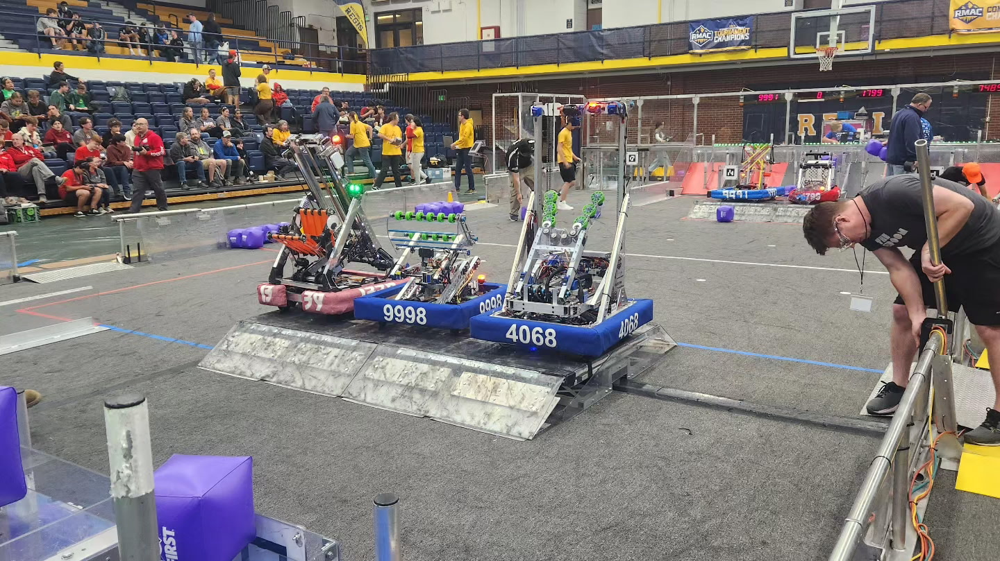
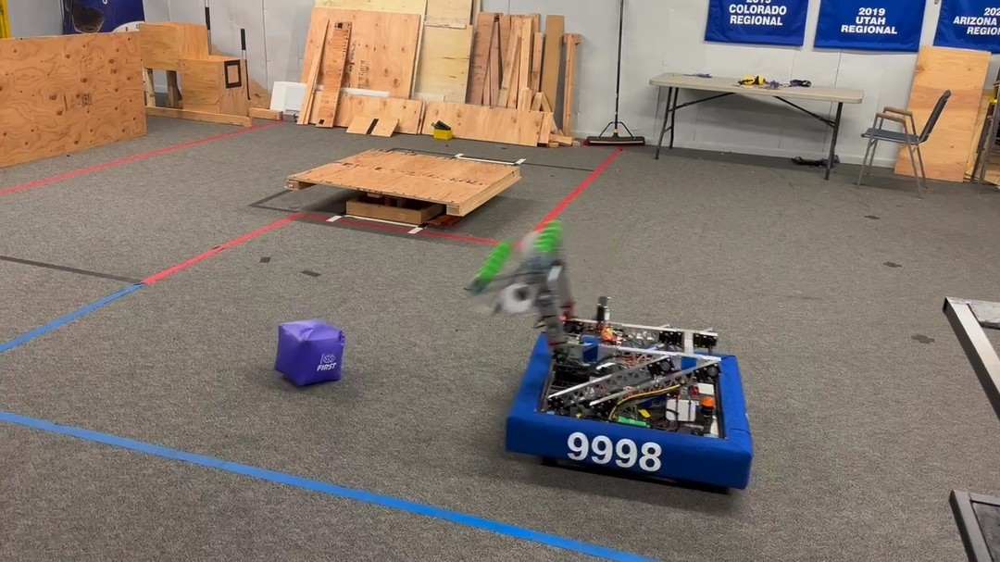
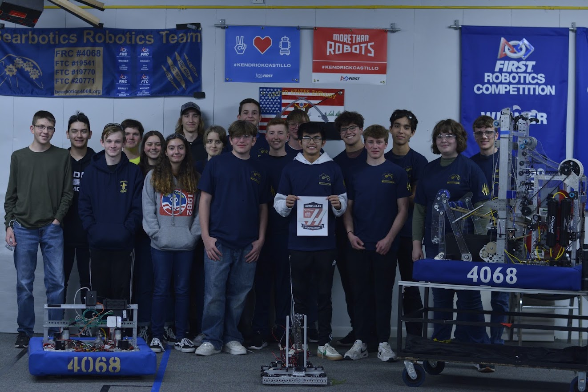
I began learning the fundamentals of CNC machining alongside more experienced students, including preparing raw stock, establishing work zero, selecting appropriate tooling, and inspecting finished parts. I also learned basic machine operation and setup while developing an understanding of how design flaws, setup errors, and machine accuracy affect finished components. I applied what I had learned during the design and machining process to help manufacture and assemble our competition robot. Working from CAD models and engineering drawings, I gained experience identifying components, understanding manufacturing requirements, and using proper assembly methods. This helped me understand how individual manufactured parts come together to form complete mechanical systems.
We put our offseason robot to the test at the KCMT competition, where I served as its operator against approximately 20 other teams, including our previous season's robot. Despite being built primarily by rookie members, the robot performed well, finishing four ranking positions higher than the previous year's robot and coming within just one ranking point of becoming an alliance captain. This was an early opportunity to apply what we had learned and demonstrate what our new team members could accomplish.
Our first competition build began with an intensive review of the game rules during the first week, followed by prototyping, mechanical design, and fabrication. Working through the six-week build season, I took on the role of primary CNC operator, manufacturing many of the robot's custom components while developing faster and more efficient machining workflows. I began taking greater ownership of the manufacturing process, finding ways to improve machining operations, reduce production time, and keep fabrication on schedule. With a one-week initial design and prototyping phase followed by six weeks of development, we pushed through a demanding build season and completed our robot just in time for the 2024 FIRST Robotics Competition season, Crescendo.
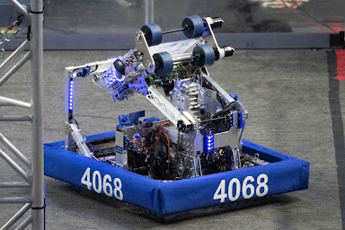
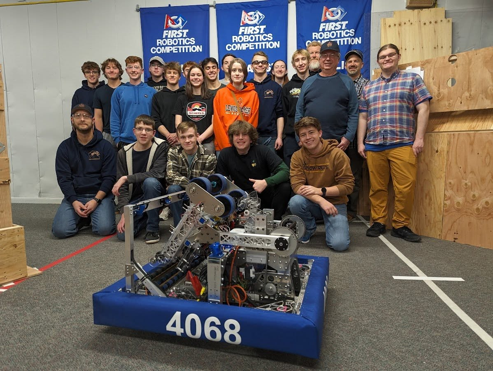
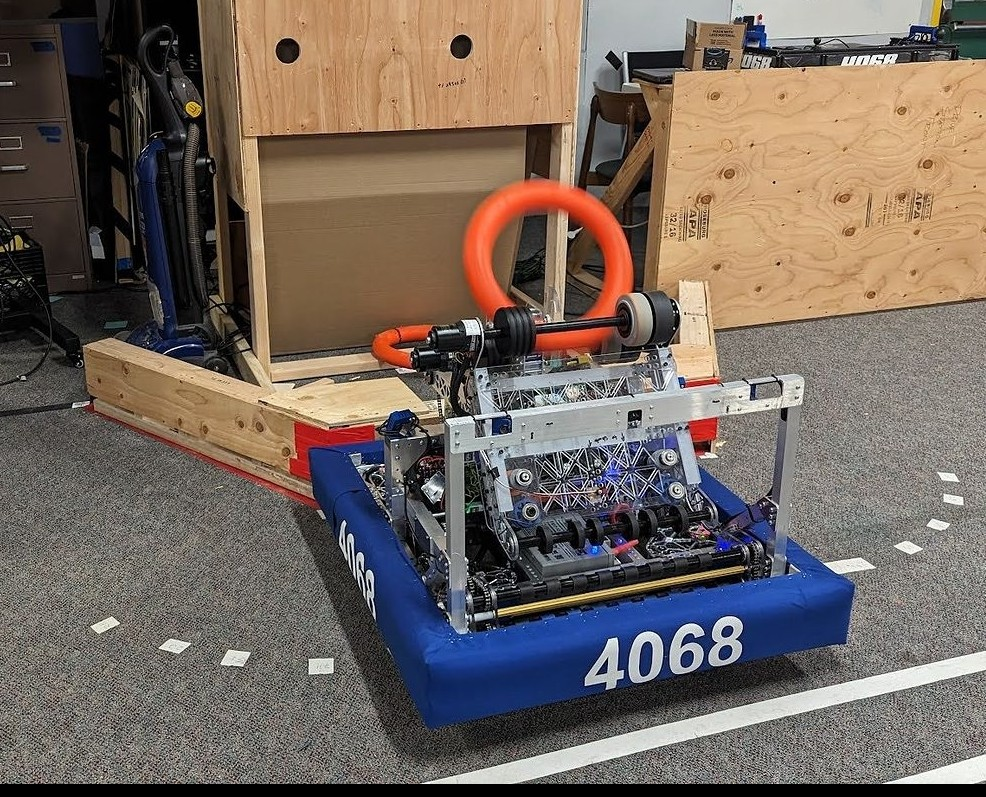
Our first competition took place in Utah, where we competed against more than 30 teams and finished qualification matches ranked 1st. During the elimination rounds, aggressive defensive play caused our drivetrain motor shafts to break free from their sockets, temporarily ending our run. After repairing the damage, we traveled to our next competition in Denver a few weeks later. Following strong practice performances, we encountered an unexpected challenge when high-intensity projector lighting, including older UV-rich lamps, interfered with our robot's vision system. The lighting made it difficult for the robot to reliably detect and track the game pieces. Our programming team worked to adjust the vision system, but the changes significantly reduced our scoring capabilities, and we ultimately fell short of our goals at that event.
For our next offseason robot, I took on a teaching role, helping 10 new team members develop the mechanical skills needed to build a robot for the 2024 Crescendo season. I guided them through the mechanical design process, teaching prototyping, equipment operation, interpreting CAD models, and translating digital designs into manufactured parts and completed assemblies. From those 10 members, I selected four to receive additional hands-on training in CNC operation, giving them the skills to independently manufacture custom components.


At the KCMT competition, I returned as the operator of our main competition robot, competing against the rookie team I had helped train. Our main robot became the captain of Alliance 5 during playoffs, while the offseason robot built by the rookies earned 12th place in the playoffs. This gave me the opportunity to see the team apply the skills they had developed while I competed against them.
I began the 2025 season as Mechanical Lead, overseeing a group of more than 10 students and taking an active role in mechanical design decisions, prototyping, and robot development. About a quarter of the way through the season, I transitioned into the Fabrication Lead role, overseeing a team of four while continuing to support the mechanical group. With more time available than the previous season, we were able to develop a more refined robot and improve our overall build process. One of our biggest goals was to eliminate major mechanical failures, and we successfully achieved that goal throughout the competition season.
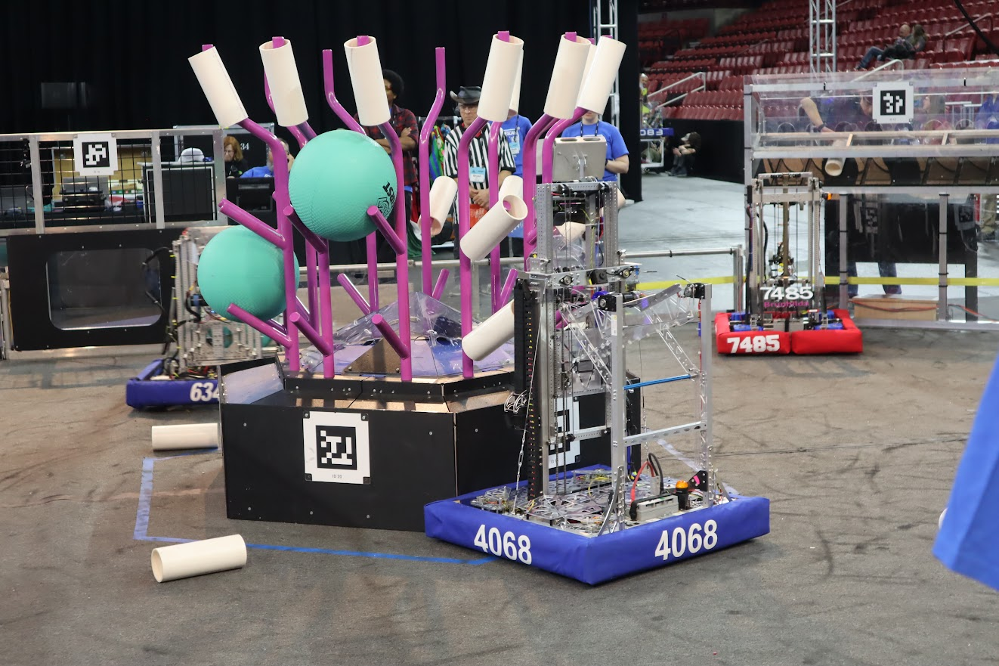
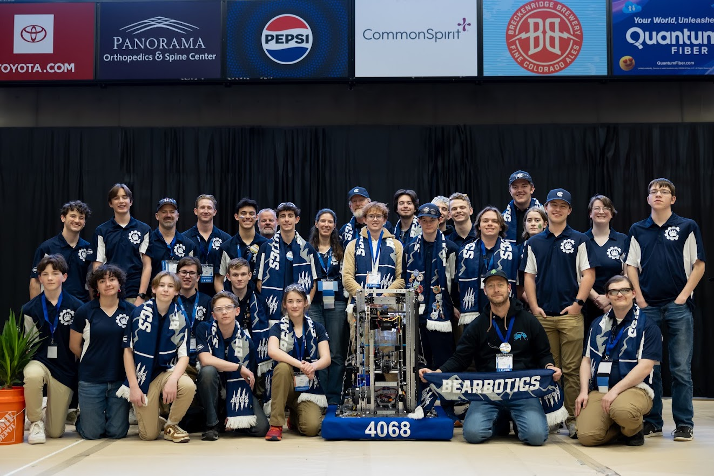
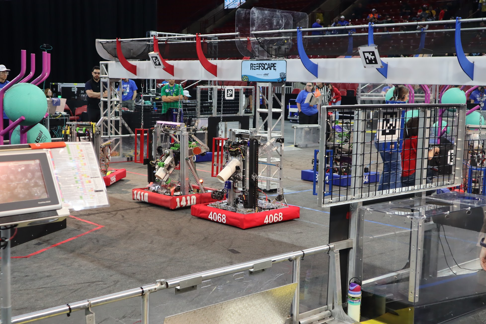
Our first competition was in Denver, where we finished qualification matches ranked 10th and advanced to the third round of playoffs. At our next event in Oklahoma, we ranked 6th and were selected as the first pick of the number-one alliance. We went on to win the regional, earning our team's first-ever qualification for the FIRST Championship in Houston. This was a major milestone for our team and the result of years of work toward reaching the World Championship.
For our first World Championship, our goal was to learn as much as possible and gain experience competing alongside the best teams in the world. We finished ranked 14th in the Daly Division, competing among more than 600 teams from around the world. Although we knew we were not yet at the level of the top-performing teams, every member of our team took the opportunity to learn. We actively spoke with other teams, asked questions, and took notes on their designs, strategies, and engineering processes.

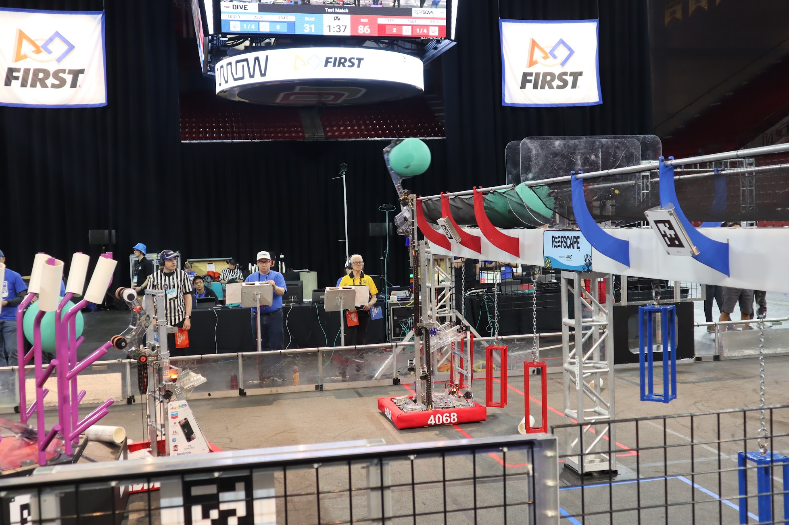

I focused particularly on manufacturing methods, material selection, and the different ways top teams designed and fabricated their robots. Seeing the approaches used by some of the best teams in the world gave me new ideas and a better understanding of what was possible in robot manufacturing. I brought back valuable knowledge that could be applied to future robot designs and our team's fabrication processes.
Looking back on the 2025 season, it was the most significant year of my time in FRC. I grew from leading mechanical development to managing fabrication operations, while continuing to contribute to the overall robot design and build process. Winning our first regional and qualifying for the World Championship showed how far our team had progressed. More importantly, competing at Worlds exposed me to new manufacturing techniques, design approaches, and ideas from teams around the world. I left the season with a stronger understanding of engineering and manufacturing, along with new knowledge and experience that I could bring into future projects.
Transitioned from Mechanical Lead to Fabrication Lead during the season.
Helped deliver a robot that completed the season without major mechanical failures.
Led a fabrication group of four while continuing to support mechanical development.
Won the Oklahoma regional as the first pick of the number-one alliance.
Finished 14th in the Daly Division at Worlds.
After the 2025 season, our team faced a major transition. We moved into a new facility, lost most of our returning members, and had to rebuild our workshop and manufacturing capabilities before the next competition season. With a much smaller team and a demanding build schedule, I took on responsibilities across shop development, fabrication, mechanical design, and robot assembly.
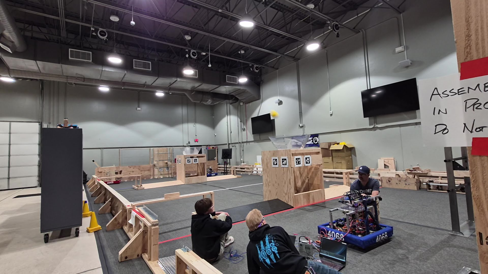
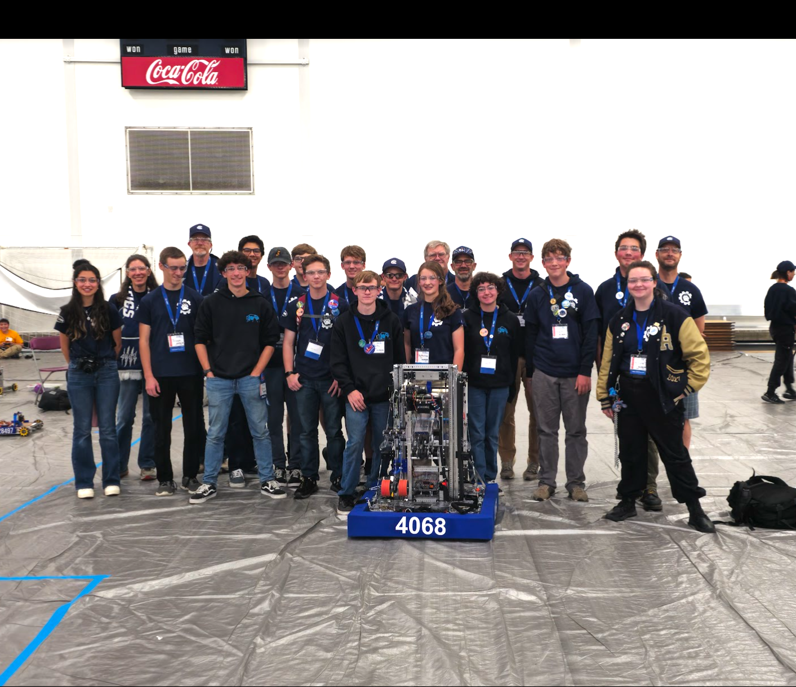
We lost access to our previous workshop over the summer and moved into a much larger facility in August. At the same time, approximately 40 seniors and three other members left a team of around 50, leaving us with a small returning group and a large number of new students to train. We did not have the time or people to build a second offseason robot, so our focus shifted toward getting the new space operational and preparing the team for the upcoming season.
Before Christmas break, we needed to move and organize the shop, build Colorado's first full-size FRC field, train new members, and bring the CNC back into operation. I helped plan the layout of our new facility, move equipment, construct the field, and teach mostly freshman rookies the fundamentals of the workshop. During the final month before break, I worked with a new mentor to learn, tune, and document the CNC setup process, bringing the machine back to an accuracy of 0.001 inch.
I entered the competition season as Fabrication and Special Projects Lead, serving as the primary machinist and overseeing the students responsible for manufacturing the robot's components. I also contributed to the overall robot design and worked directly on prototyping the shooter. Alongside the returning members I had trained the previous year, I started training two additional students to operate and work with our fabrication equipment.
Because of the limited time available, our fabrication shop was operating on generator power. We were working to keep manufacturing moving while the mechanical team developed the robot and prepared parts for assembly. About two and a half weeks into the build, that already demanding process was interrupted by a major CNC failure.
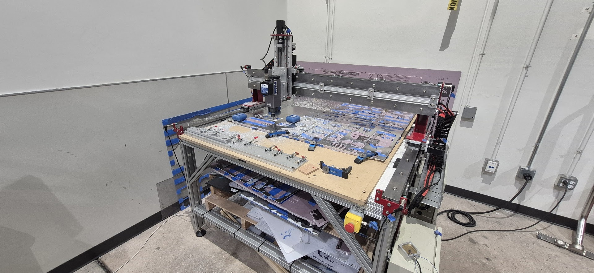
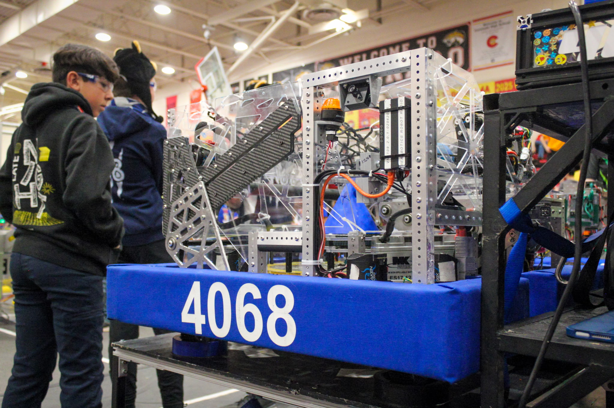
During a machining operation, we discovered that the CNC's X and Y axes were no longer staying synchronized. Holes and features cut during the initial pass no longer lined up during the finishing pass, making parts inaccurate and potentially unusable. With only about a month remaining before our first competition, this was one of the worst problems we could have encountered.
My teammate and team lead, Katherine, and I immediately began investigating the machine. The first two days were spent diagnosing the issue, checking the systems we could access, and trying to isolate the source of the positional errors. We disassembled the motor assemblies, inspected and rebuilt them, checked torque specifications, and consulted a parent with professional machining experience. Even after checking the components we suspected, we could not identify a clear mechanical fault.
Over five days, using nearly every available hour outside of school, we gradually brought the machine back into usable accuracy. Our schedule included weekdays from 2 PM until 9 PM or later and a Saturday from 8 AM to 7 PM. The machine was running again, but restoring it was only half the problem.
The positional errors meant that parts manufactured during the previous week could have defects. We worked with the CAD team to review the robot and identify which components needed to be remade. At that point, only about 80% of the robot's CAD was complete, while mechanical prototyping was nearly finished and urgently needed manufactured parts.
Katherine and I spent the next two weeks working through the backlog. We worked weekdays from 2 PM until 9 PM or later and Saturdays from 8 AM to 7 PM, using every available shop hour to manufacture replacement components and catch up with the mechanical team. During that push, we produced more than 80 replacement parts. We continued manufacturing through the remainder of the build, reaching 375 total parts for the season.
Even after catching up, the machine remained a concern. We had recovered production, but we still needed to keep it running reliably while the robot approached completion.
Once fabrication had caught up, I left the students I had trained to continue manufacturing and shifted my focus with Katherine to the mechanical build. The mechanical team was significantly behind schedule. The chassis was unfinished, the intake had not been started, the elevator was only partially assembled, the kicker supports were mounted, and the turret had not yet been built.
We first reviewed the robot's current state and discussed build methods we had learned from other teams at Worlds. Then we divided the work and got started. I assembled the chassis and coordinated with our lead to have the axles milled. From there, I helped build the intake and assisted with the turret, while continuing to move between mechanical and fabrication depending on which group needed support. After many late nights, we completed the robot's mechanical assembly with a week and a half remaining before our first competition.
Mechanical completion still left another major problem: our electrical team had left. With the competition approaching, Katherine, two rookies, and I had to take on the electrical work ourselves. We learned the necessary wiring and electrical procedures and worked primarily as a pair to wire the entire robot. The first smoke test was nerve-racking, but the robot passed on the first attempt. With one week remaining before competition, we handed the robot over to programming.

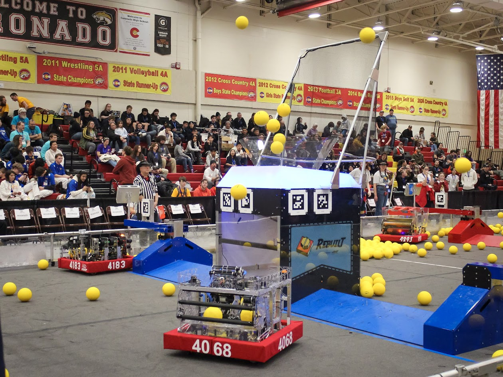
At our first competition, I served as Human Player, although my primary responsibility was overseeing and mentoring two new pit crew technicians. The role gave me the opportunity to help them learn how to inspect, maintain, and troubleshoot the robot between matches. We finished qualification matches ranked 7th, became captain of Alliance 5, and advanced to the fourth round of playoffs.
Between playoff matches, one of our swerve drive gears failed and became buried inside the robot. The drive was designed to be disassembled from the top, but the gear was inaccessible through the normal removal process. I worked through an alternate way to access and replace it, completing the repair in approximately an hour so we could return to the field for our next match.
Between events, we made upgrades based on what we had learned during our first competition and clarified rule precedents. Our second event was considerably more competitive, with teams from around the world, including Robotnauts. We finished qualification matches ranked 14th, were selected as the first pick of Alliance 7, and once again advanced to the fourth round of playoffs.
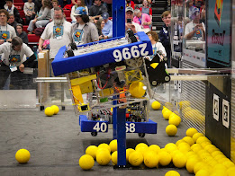
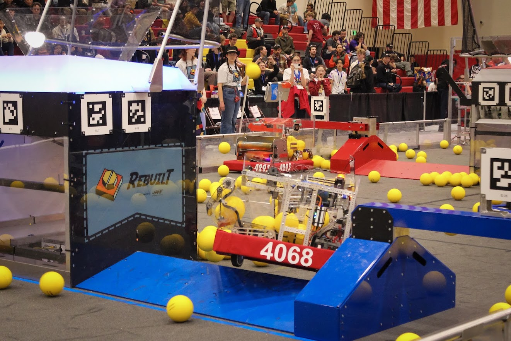
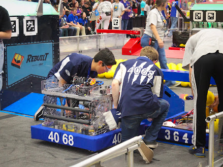
After competition ended, I stayed with the team while many of the other seniors moved on. Katherine and I returned to the CNC, retuned the machine, and worked to make sure it was ready for the next group of students. During this process, we eventually identified the likely root cause of the earlier failure: the generator powering the fabrication shop was producing inconsistent voltage as weather conditions changed. Although our initial voltage checks had appeared correct, the changing output was preventing the CNC from receiving the stable power it needed to maintain its accuracy.
I also finished the documentation I had been developing over the previous three years. The final collection covered CNC operation, machine tuning, maintenance, and Fusion 360 CAM, totaling more than 120 pages. I trained the new fabrication lead, helped teach other team leads, and stayed to finish projects that were still outstanding.
Eventually, it was time to say goodbye and move on to my next chapter. The documentation is still being used by the team, and members continue to reach out with questions about the processes and methods I developed. I plan to continue supporting the team whenever they need help and will always be interested in following their progress.
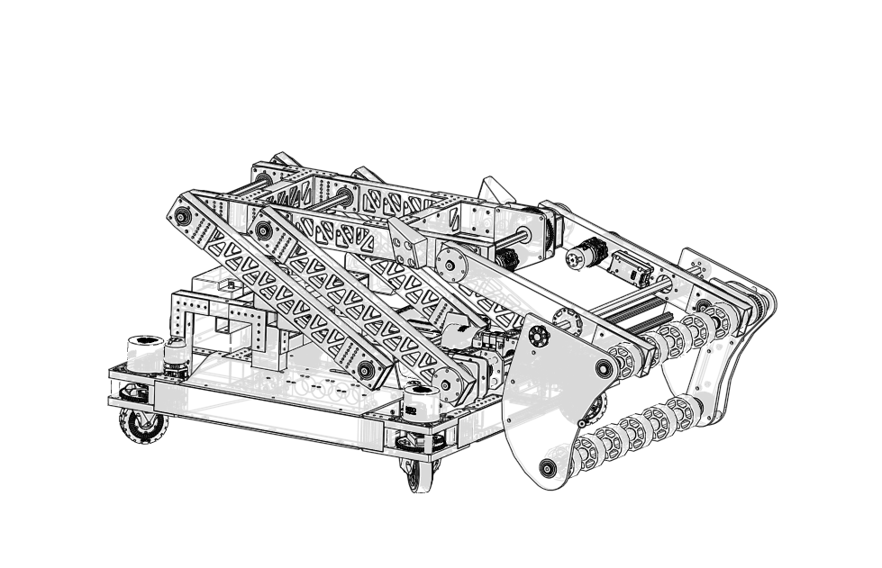
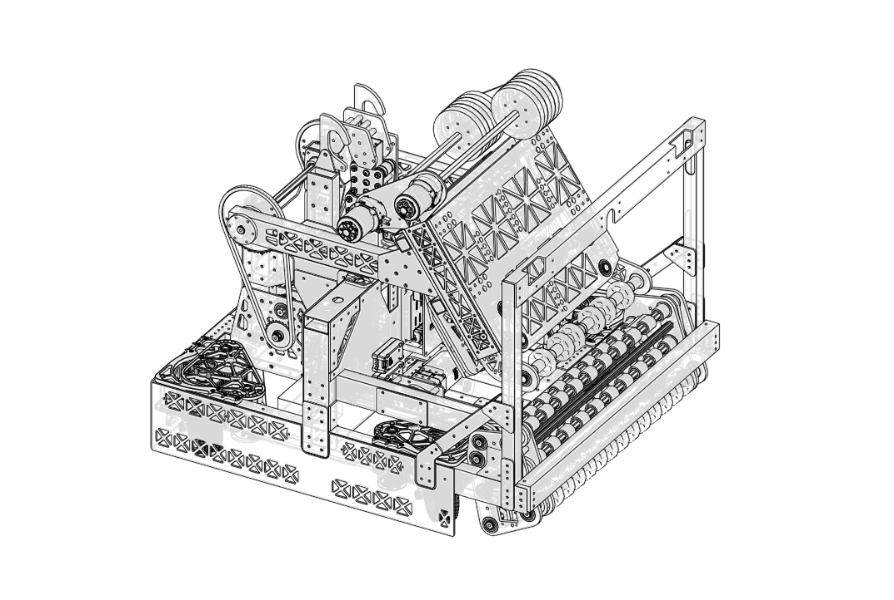
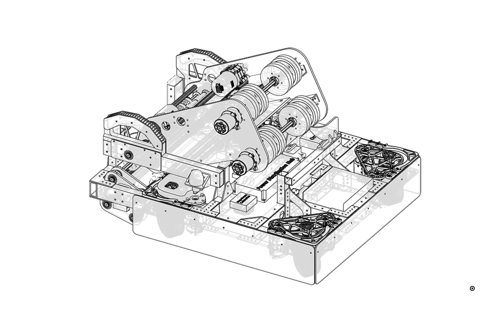